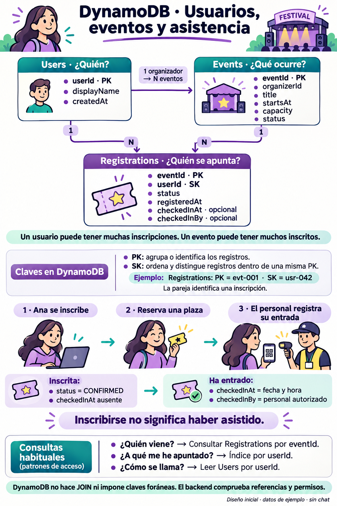

DynamoDB · Usuarios, eventos y asistencia
Modelo inicial de Festival Control. Sigue las conexiones para entender qué guarda cada tabla y cómo una inscripción relaciona a un usuario con un evento.

Las tres tablas y sus relaciones
- Users: quién es la persona. userId es la clave de partición (PK). displayName guarda el nombre visible y createdAt la fecha de creación.
- Events: qué ocurre. eventId es la PK. También guarda organizerId, title, startsAt, capacity y status. organizerId identifica al usuario organizador.
- Registrations: quién se apunta a qué evento. eventId es la PK y userId la clave de ordenación (SK). La pareja identifica una inscripción. Guarda status, registeredAt y, al registrar la entrada, checkedInAt y checkedInBy.
Un usuario puede tener cero o muchas inscripciones; cada inscripción corresponde a un usuario. Un evento puede tener cero o muchas inscripciones; cada inscripción corresponde a un evento. Un organizador puede organizar muchos eventos.
PK y SK con un ejemplo
La PK agrupa o identifica registros. Cuando la tabla tiene SK, esta distingue y ordena los registros que comparten PK. En Registrations, eventId = 1 y userId = usr-042 identifican una inscripción concreta.
Consulta la tabla por eventId para ver los inscritos de un evento. Consulta el índice PorUsuario por userId para ver los eventos de un usuario. En el índice, eventId es la clave de ordenación. Una inscripción recién escrita puede tardar unos segundos en aparecer. Prueba las dos consultas en el cuaderno.
Inscripción y asistencia son cosas distintas
Ana se inscribe y su estado pasa a CONFIRMED. Su inscripción reserva una plaza, pero todavía no prueba asistencia. Cuando entra, el personal autorizado registra checkedInAt y checkedInBy. Si no existe ese registro de entrada, no se debe dar por acreditada su asistencia.
Las horas de registro y la identidad del personal se obtienen en el servidor. El aforo y la inscripción deben actualizarse de forma transaccional, con condiciones que eviten duplicados y sobreaforo.
Cómo se conectan los datos en DynamoDB
Las líneas representan relaciones del negocio: DynamoDB no hace JOIN ni impone claves foráneas. El backend comprueba referencias y permisos. El perfil se obtiene leyendo Users por userId; no es necesario duplicar todos sus datos en cada inscripción.
El índice para listar próximos eventos se diseñará según las consultas y el volumen. Las fechas se guardan con un formato UTC uniforme; DynamoDB las almacena como texto en este modelo. Una capacidad es un número y sus reglas se validan en el backend.